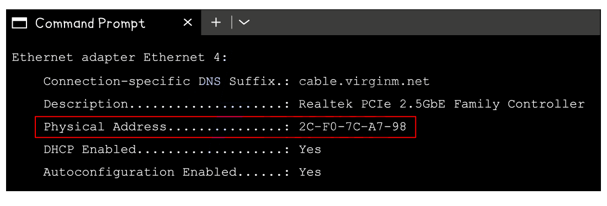

Binary prefixes
What is a binary prefix?
- A binary prefix is a unit prefix used to indicate multiples of bytes in binary
- Consider the word kilobyte, “kilo” is the prefix
- Bytes are the smallest unit of data that can be stored in a computer so there needs to be a way of expressing bytes in larger multiples
Denary prefixes
- A common way of expressing multiples of bytes is to use denary prefixes:
| Denary unit | Equivalent size (bytes) |
|---|---|
| 1 kilobyte (1 KB) | 1000 |
| 1 megabyte (1 MB) | 1,000,000 |
| 1 gigabyte (1 GB) | 1,000,000,000 |
| 1 terabyte (1 TB) | 1,000,000,000,000 |
| 1 petabyte (1 PB) | 1,000,000,000,000,000 |
- This system relies on the assumption that 1 kilo = 1000
- This assumption is based on the denary (base 10) number system
- E.g. a 1 GB hard drive can store 1 x 10 9 bytes
Binary prefixes
- However, computers use the binary (base 2) number system so the denary system is technically inaccurate when describing storage
- To be precise, expressing multiples of bytes is done using binary prefixes:
| Binary unit | Number of bytes (base 2) | Equivalent size (base 10) |
|---|---|---|
| 1 kibibyte (1 KiB) | 2 10 | 1024 |
| 1 mebibyte (1 MiB) | 2 20 | 1,048,576 |
| 1 gibibyte (1 GiB) | 2 30 | 1,073,741,824 |
| 1 tebibyte (1 TiB) | 2 40 | 1,099,511,627,776 |
| 1 pebibyte (1 PiB) | 2 50 | 1,125,899,906,842,624 |
- Notice the prefixes change depending on the system being used, e.g. kilo (denary) vs kibi (binary)
Why does it matter?
- The importance of the system being used depends on how precise you need to be
- Identifying the total amount of memory (RAM) available to a computer must be accurate (use binary prefixes)
- E.g. 16 GiB RAM can store 16 x 2 30 bytes of data (17,179,869,184 bytes)
- when describing storage space, a rough estimate is acceptable (use denary prefixes)
- E.g. a 16 GB memory stick can store 16 x 10 9 bytes of data (16,000,000,000 bytes)
Number Systems
Number bases
What is a number base?
- A number base is the number of different digits or symbols a number system uses to represent values
- Each place in a number represents a power of the base, starting from the right
Denary
- Denary is a number system that is made up of 10 digits (0-9)
- Denary is referred to as a base-10 number system
- Each digit has a weight factor of 10 raised to a power, the rightmost digit is 1s (10 0), the next digit to the left 10s (10 1) and so on
- Humans use the denary system for counting, measuring and performing maths calculations
-
Using combinations of the 10 digits we can represent any number
-
In this example, (3 x 1000) + (2 x 100) + (6 x 10) + (8 x 1) = 3268
- To represent a bigger number we add more digits
Binary
- Binary is a number system that is made up of two digits (1 and 0)
- Binary is referred to as a base-2 number system
- Each digit has a weight factor of 2 raised to a power, the rightmost digit is 1s (2 0), the next digit to the left 2s (2 1) and so on
- Each time a new digit is added, the column value is multiplied by 2
-
Using combinations of the 2 digits we can represent any number
-
In this example, Binary 1100 = (1 x 8) + (1 x 4) = 12
- To represent bigger numbers we add more binary digits (bits)
| 32,768 | 16,384 | 8,192 | 4,096 | 2,048 | 1,024 | 512 | 256 | 128 | 64 | 32 | 16 | 8 | 4 | 2 | 1 |
|---|---|---|---|---|---|---|---|---|---|---|---|---|---|---|---|
| 215 | 214 | 213 | 212 | 211 | 210 | 29 | 28 | 27 | 26 | 25 | 24 | 23 | 22 | 21 | 20 |
Hexadecimal
- Hexadecimal is a number system that is made up of 16 digits, 10 numbers (0-9) and 6 letters (A-F)
| 0 | 1 | 2 | 3 | 4 | 5 | 6 | 7 | 8 | 9 | 10 | 11 | 12 | 13 | 14 | 15 |
|---|---|---|---|---|---|---|---|---|---|---|---|---|---|---|---|
| 0 | 1 | 2 | 3 | 4 | 5 | 6 | 7 | 8 | 9 | A | B | C | D | E | F |
- Hexadecimal is referred to as a base-16 number system
- Each digit has a weight factor of 16 raised to a power, the rightmost digit is 1s (16 0), the next digit to the left 16s (16 1)
| 16s | 1s | |
|---|---|---|
| 1 | 3 | |
| 1 x16 | 3 x 1 | = 19 |
- A quick comparison table demonstrates a relationship between hexadecimal and a binary nibble
- One hexadecimal digit can represent four bits of binary data
| Denary | Binary | Hexadecimal |
|---|---|---|
| 0 | 0000 | 0 |
| 1 | 0001 | 1 |
| 2 | 0010 | 2 |
| 3 | 0011 | 3 |
| 4 | 0100 | 4 |
| 5 | 0101 | 5 |
| 6 | 0110 | 6 |
| 7 | 0111 | 7 |
| 8 | 1000 | 8 |
| 9 | 1001 | 9 |
| 10 | 1010 | A |
| 11 | 1011 | B |
| 12 | 1100 | C |
| 13 | 1101 | D |
| 14 | 1110 | E |
| 15 | 1111 | F |
Binary to denary & denary to binary
- Binary numbers can be converted into denary and vice-versa
-
For example the 8-bit binary number 01101001 can be converted into denary using the following method:
 Binary to denary conversion
Binary to denary conversion -
Therefore the 8-bit binary number 01101001 is 105 as a denary value
- To convert the denary number 101 to binary, we firstly write out binary number system
| 128 | 64 | 32 | 16 | 8 | 4 | 2 | 1 |
|---|---|---|---|---|---|---|---|
- Then we start at the left and look for the highest number that is less than or equal to 101 and if so, place a 1 in that column
- Otherwise, place a 0 in the column
- 128 is bigger than 101 and therefore we place a 0 in that column
- 64 is smaller than 101 so we place a 1 in that column
- 101 - 64 = 37
- This now means we have 37 left to find
- 32 is smaller than 37 so we place a 1 in that column
- 37 - 32 = 5
- This now means we have 5 left to find
- 16 is bigger than 5 and therefore we place a 0 in that column
- 8 is bigger than 5 and therefore we place a 0 in that column
- 4 is smaller than 5 so we place a 1 in that column
- 5 - 1 = 1
- This now means we have 1 left to find
- 2 is bigger than 1 and therefore we place a 0 in that column
- 1 is equal to the number we have left so we place a 1 in that column
- 64 + 32 + 4 + 1 = 101
- Therefore the denary number 101 in binary is 01100101
| 128 | 64 | 32 | 16 | 8 | 4 | 2 | 1 |
|---|---|---|---|---|---|---|---|
| 0 | 1 | 1 | 0 | 0 | 1 | 0 | 1 |
Hexadecimal to denary & denary to hexadecimal
- To convert the denary number 163 to hexadecimal, start by dividing the denary value by 16 and recording the whole times the number goes in and the remainder
- 163 ➗16 = 10 remainder 3
- In hexadecimal the whole number = digit 1 and the remainder = digit 2
- Digit 1 = 10 (A)
- Digit 2 = 3
- Denary 163 is A3 in hexadecimal
- To convert the hexadecimal number 79 to denary, start by multiplying the first hexadecimal digit by 16
- 7 ✖ 16 = 112
- Add digit 2 to the result
- 112 + 9 = 121
- Hexadecimal 79 is 121 in denary
Binary to hexadecimal & hexadecimal to binary
- To convert the binary number 10110111 to hexadecimal, first split the 8 bit number into 2 binary nibbles
| 8 | 4 | 2 | 1 | 8 | 4 | 2 | 1 | |
|---|---|---|---|---|---|---|---|---|
| 1 | 0 | 1 | 1 | 0 | 1 | 1 | 1 |
- For each nibble, convert the binary to it’s denary value
- (1 x 8) + (1 x 2) + (1 x 1) = 11 (B)
- (1 x 4) + (1 x 2) + (1 x 1) = 7
- Join them together to make a 2 digit hexadecimal number
- Binary 10110111 is B7 in hexadecimal
- To convert the hexadecimal number 5F to binary, first split the digits apart and convert each to a binary nibble
| 8 | 4 | 2 | 1 | |
|---|---|---|---|---|
| 0 | 1 | 0 | 1 | = 5 |
| 8 | 4 | 2 | 1 | |
| 1 | 1 | 1 | 1 | = 15 (F) |
- Join the 2 binary nibbles together to create an 8 bit binary number
| 128 | 64 | 32 | 16 | 8 | 4 | 2 | 1 |
|---|---|---|---|---|---|---|---|
| 0 | 1 | 0 | 1 | 1 | 1 | 1 | 1 |
-
Hexadecimal 5F is 01011111 in binary Convert the positive binary integer 1010 0010 into hexadecimal. [1] Answer
-
A2 [1 mark]
Binary Coded Decimal (BCD)
What is Binary Coded Decimal?
- Binary coded decimal is a number system that uses 4 bit codes to represent each denary digit (0-9)
| BCD | Denary digit |
|---|---|
| 0000 | 0 |
| 0001 | 1 |
| 0010 | 2 |
| 0011 | 3 |
| 0100 | 4 |
| 0101 | 5 |
| 0110 | 6 |
| 0111 | 7 |
| 1000 | 8 |
| 1001 | 9 |
- To represent the denary number 2500 in BCD format would be:
- 2500 = 0010 0101 0000 0000
- BCD can be stored in a computer as either half a byte (4 bits) or as two 4 bit codes joined to from a byte (8 bits)
Four single bytes
| 0 | 0 | 0 | 0 | 0 | 0 | 1 | 0 | = 2 |
|---|---|---|---|---|---|---|---|---|
| 0 | 0 | 0 | 0 | 0 | 1 | 0 | 1 | = 5 |
| 0 | 0 | 0 | 0 | 0 | 0 | 0 | 0 | = 0 |
| 0 | 0 | 0 | 0 | 0 | 0 | 0 | 0 | = 0 |
Two bytes
| 0 | 0 | 1 | 0 | 0 | 1 | 0 | 1 | = 2, 5 |
|---|---|---|---|---|---|---|---|---|
| 0 | 0 | 0 | 0 | 0 | 0 | 0 | 0 | = 0, 0 |
One’s & two’s complement
What is one’s complement?
- One’s complement is a method of representing both positive and negative numbers
- To turn a positive binary number in to a negative the positive binary number is inverted (0 becomes 1 and 1 becomes 0)
| 0 | 1 | 0 | 0 | 1 | 0 | 0 | 0 | = 72 |
|---|---|---|---|---|---|---|---|---|
| 1 | 0 | 1 | 1 | 0 | 1 | 1 | 1 | = -72 |
- The issue with one’s complement is that it can have two representations for 0 (positive and negative) Be careful not to confuse one’s complement with two’s complement. In one’s complement, you just invert the bits to get the negative version, you don’t treat the MSB as negative like you would in two’s complement. That’s a different system!
What is two’s complement?
- Two’s complement is another method of representing both positive and negative numbers
- To turn a positive binary number into a negative:
- Positive binary number is inverted
- ‘1’ is added to the right most bit
- Using two’s complement the leftmost bit is designated the most significant bit (MSB)
- To represent negative numbers this bit must equal 1, turning the column value into a negative
- Working with 8 bits, the 128 column becomes -128
| -128 | 64 | 32 | 16 | 8 | 4 | 2 | 1 | |
|---|---|---|---|---|---|---|---|---|
| 0 | 1 | 0 | 0 | 1 | 0 | 0 | 0 | = 72 |
| invert | ||||||||
| 1 | 0 | 1 | 1 | 0 | 1 | 1 | 1 | |
| add 1 | ||||||||
| 1 | + | |||||||
| result | ||||||||
| 1 | 0 | 1 | 1 | 1 | 0 | 0 | 0 | = -72 |
8 bit two’s complement can represent values between 0111 1111 (+127) and 1000 0000 (-128)
- An alternative way of thinking about this is:
- Starting from the right, keep all the bits the same up to and including the first 1
- Flip the rest of the digits
- 0101 1000 becomes…
- 1010 1000
- Starting from the right, keep all the bits the same up to and including the first 1
Key reasons to use two’s complement
- Consistency
- You don’t need different rules for signed and unsigned numbers
- Whether you’re adding +37 and +58, or −37 and +58, or −37 and −58, the binary addition process is the same
- Two’s complement works for any combination of positive and negative values
- You don’t need different rules for signed and unsigned numbers
- Hardware simplicity
- CPUs are built to do simple binary addition
- Two’s complement means:
- The same adder circuit can handle everything
- No special logic is needed to detect signs or subtract manually
- CPUs are built to do simple binary addition
-
It still works, up to a point
- As long as the sum doesn’t exceed the max value (+127 in 8-bit), you can add two positive numbers with two’s complement without any issues Convert the denary number 649 into Binary Coded Decimal (BCD) [1] Answer
-
0110 0100 1001 [1 mark]
Binary Arithmetic
Binary addition
What is binary addition?
- Binary addition involves summing numbers in base-2, which uses only the digits 0 and 1
- Like denary addition, start from the rightmost digit and move towards the left
- Carrying over occurs when the sum of a column is greater than 1, passing the excess to the next left column
Example addition
 Add the following two binary integers using binary addition. Show your working. [2]
1 0 0 1 1 0 1 0 + 0 0 1 0 1 1 1 1
Answer
Add the following two binary integers using binary addition. Show your working. [2]
1 0 0 1 1 0 1 0 + 0 0 1 0 1 1 1 1
Answer
| carry | 1 | 1 | 1 | 1 | 1 | |||
|---|---|---|---|---|---|---|---|---|
| 1 | 0 | 0 | 1 | 1 | 0 | 1 | 0 | |
| + | 0 | 0 | 1 | 0 | 1 | 1 | 1 | 1 |
| 1 | 1 | 0 | 0 | 1 | 0 | 0 | 1 |
1 mark for working [1 mark]
- 1 mark for answer [1 mark]
Overflow
What is an overflow?
- Overflow occurs when the sum of two binary numbers exceeds the given number of bits
- In signed number representations, the leftmost bit often serves as the sign bit; overflow can flip this, incorrectly changing the sign of the result
- Overflow generally leads to incorrect or unpredictable results as the extra bits are truncated or wrapped around
Binary subtraction
- To carry out subtraction, the number being subtracted is converted into its negative equivalent using two’s complement
- The two numbers are then added together
Example
- 48 - 12
| ** -128** | 64 | 32 | 16 | 8 | 4 | 2 | 1 | ||
|---|---|---|---|---|---|---|---|---|---|
| 0 | 0 | 1 | 1 | 0 | 0 | 0 | 0 | = 48 | |
| 0 | 0 | 0 | 0 | 1 | 1 | 0 | 0 | = 12 | |
| find two’s complement of -12 | |||||||||
| 0 | 0 | 0 | 0 | 1 | 1 | 0 | 0 | = 12 | |
| invert | |||||||||
| 1 | 1 | 1 | 1 | 0 | 0 | 1 | 1 | ||
| add 1 | |||||||||
| 1 | |||||||||
| result | |||||||||
| 1 | 1 | 1 | 1 | 0 | 1 | 0 | 0 | = -12 | |
| Add 48 and -12 | |||||||||
| -128 | 64 | 32 | 16 | 8 | 4 | 2 | 1 | ||
| 0 | 0 | 1 | 1 | 0 | 0 | 0 | 0 | = 48 | |
| 1 | 1 | 1 | 1 | 0 | 1 | 0 | 0 | = -12 | |
| carries | |||||||||
| 1 | 1 | 1 | 1 | ||||||
| result | |||||||||
| 0 | 0 | 1 | 0 | 0 | 1 | 0 | 0 | = 36 |
- 48 - 12 = 36
- The additional overflow bit is ignored leaving a result of 0010 0100, denary equivalent of 36, which is the correct answer
- In two’s complement arithmetic, the overflow bit does not contribute to the actual value of the operation but is more of a by-product of the method
Uses of Number Systems
Applications of Binary Coded Decimal (BCD)
What are the uses of binary-coded decimal (BCD)?
| Use Case | Why BCD is used |
|---|---|
| Electronic calculators | Keeps numbers in decimal format for easier display and accuracy |
| Digital clocks and watches | Time is naturally decimal (e.g. 12:45), so BCD makes display logic simpler |
| Banking and financial systems | Avoids rounding errors when doing decimal calculations, especially with money |
| Old digital systems / embedded systems | Simpler to implement with hardware that displays digits individually |
- Binary coded decimal is commonly used in systems that need to display decimal numbers clearly and accurately
- BCD is ideal for applications like digital clocks, calculators, and financial systems where decimal precision matters
- Using BCD avoids rounding errors that can occur in binary-based arithmetic, especially with money and time
- It’s still found in older or embedded systems where simple hardware-based decimal output is needed
Applications of hexadecimal
Why is hexadecimal used?
- In Computer Science hexadecimal is often preferred when working with large values
- It takes fewer digits to represent a given value in hexadecimal than in binary
- 1 hexadecimal digit corresponds 4 bits and can represent 16 unique values (0-F)
- It is beneficial to use hexadecimal over binary because:
- The more bits there are in a binary number, the harder it makes for a human to read
- Numbers with more bits are more prone to errors when being copied
- Examples of where hexadecimal can be seen:
- MAC addresses
- Colour codes
- URLs
MAC addresses
- A typical MAC address consists of 12 hexadecimal digits, equivalent to 48 digits in binary
- AA:BB:CC:DD:EE:FF
- 10101010:10111011:11001100:11011101:11101110:11111111
- Writing down or performing calculations with 48 binary digits makes it very easy to make a mistake

Colour codes
- A typical hexadecimal colour code consists of 6 hexadecimal digits, equivalent to 24 digits in binary
- #66FF33 (green)
- 01000010:11111111:00110011

URL’s
- A URL can only contain standard characters (a-z and A-Z), numbers (0-9) and some special symbols which is enough for basic web browsing
- If a URL needs to include a character outside of this set, they are converted into a hexadecimal code
- Hexadecimal codes included in a URL are prefixed with a % sign
Character Encoding
Character sets
What is a character set?
- A character set is all the characters and symbols that can be represented by a computer system
- Each character is given a unique binary code
- Character sets are ordered logically, the code for ‘B’ is one more than the code for ‘A’
- A character set provides a standard for computers to communicate and send/receive information
- Without a character set, one system might interpret 01000001 differently from another
- The number of characters that can be represented is determined by the number of bits used by the character set
- Two common character sets are:
- American Standard Code for Information Interchange (ASCII)
- Universal Character Encoding (UNICODE)
ASCII
What is ASCII?
- ASCII is a character set and was an accepted standard for information interchange
- ASCII uses 7 bits, providing 2 7 unique codes (128) or a maximum of 128 characters it can represent
- This is enough to represent the letters, numbers, and symbols from a standard keyboard
- The sixth bit changes from 1 to 0 when comparing uppercase and lowercase characters
- a 0110 0001
- A 0100 0001
- b 0110 0010
- B 0100 0010
- This made conversion between the two much easier
-
This speeds up the overall usability of the character set
 Part of the ASCII code table
Part of the ASCII code table -
ASCII only represents basic characters needed for English, limiting its use for other languages
Extended ASCII
What is extended ASCII?
- Extended ASCII uses an 8th bit, providing 256 unique codes (2 8 = 256) or a maximum of 256 characters it can represent
- Extended ASCII provides essential characters such as mathematical operators and more recent symbols such as ©
- This allows for non-English characters and for drawing characters to be included
UNICODE
What is UNICODE?
- UNICODE is a character set and was created as a solution to the limitations of ASCII
- UNICODE uses a minimum of 16 bits, providing 2 16 unique codes (65,536) or a minimum of 65,536 characters it can represent
- UNICODE can represent characters from all the major languages around the world
- UNICODE was designed to create a universal standard that covered all languages and all writing systems
- The first 128 characters in the UNICODE character set are the same as ASCII
ASCII vs UNICODE
| ASCII | UNICODE | |
|---|---|---|
| Number of bits | 7-bits | 16-bits |
| Number of characters | 128 characters | 65,536 characters |
| Uses | Used to represent characters in the English language. | Used to represent characters across the world. |
| Benefits | It uses a lot less storage space than UNICODE. | It can represent more characters than ASCII. It can support all common characters across the world. It can represent special characters such as emoji’s. |
| Drawbacks | It can only represent 128 characters. It cannot store special characters such as emoji’s. |
It uses a lot more storage space than ASCII. |